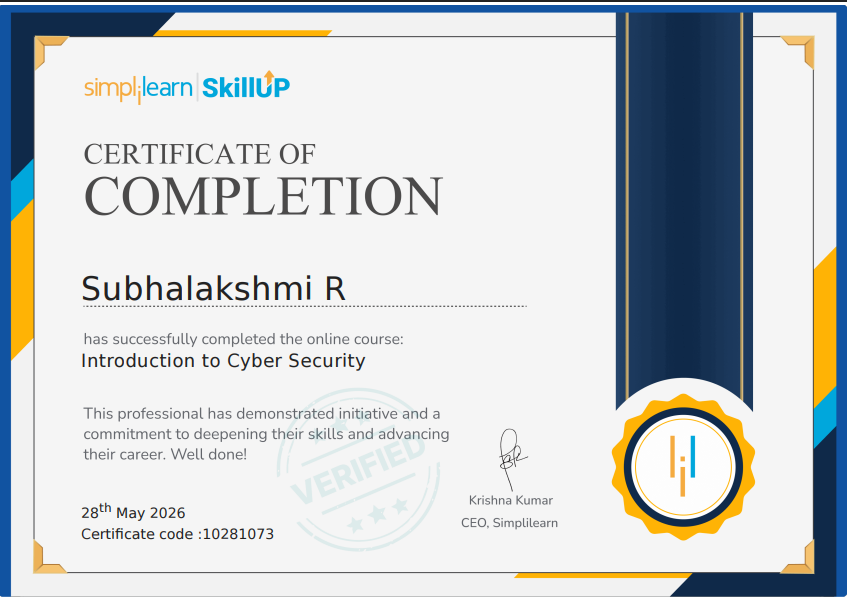
Successfully completed the Introduction to Cyber Security course offered by Simplilearn SkillUp. Gained foundational knowledge of cybersecurity concepts, cyber threats, network security, risk management, data protection, and best practices for maintaining a secure digital environment.
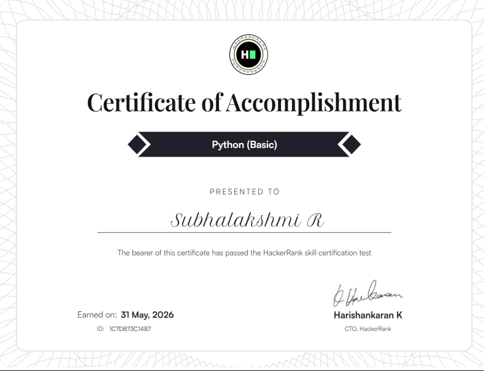
Successfully earned the Python (Basic) Certification from HackerRank by demonstrating proficiency in Python programming fundamentals, including data types, control structures, functions, problem-solving techniques, and basic object-oriented programming concepts.
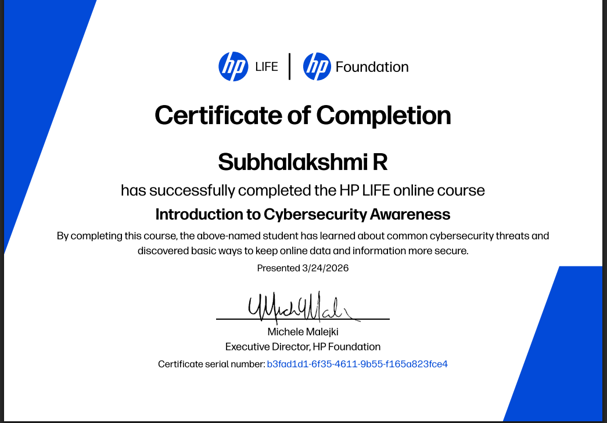
Successfully completed the HP LIFE course on Introduction to Cybersecurity Awareness. Gained knowledge of common cyber threats, online safety practices, data protection techniques, password security, phishing prevention, and methods for maintaining a secure digital environment.
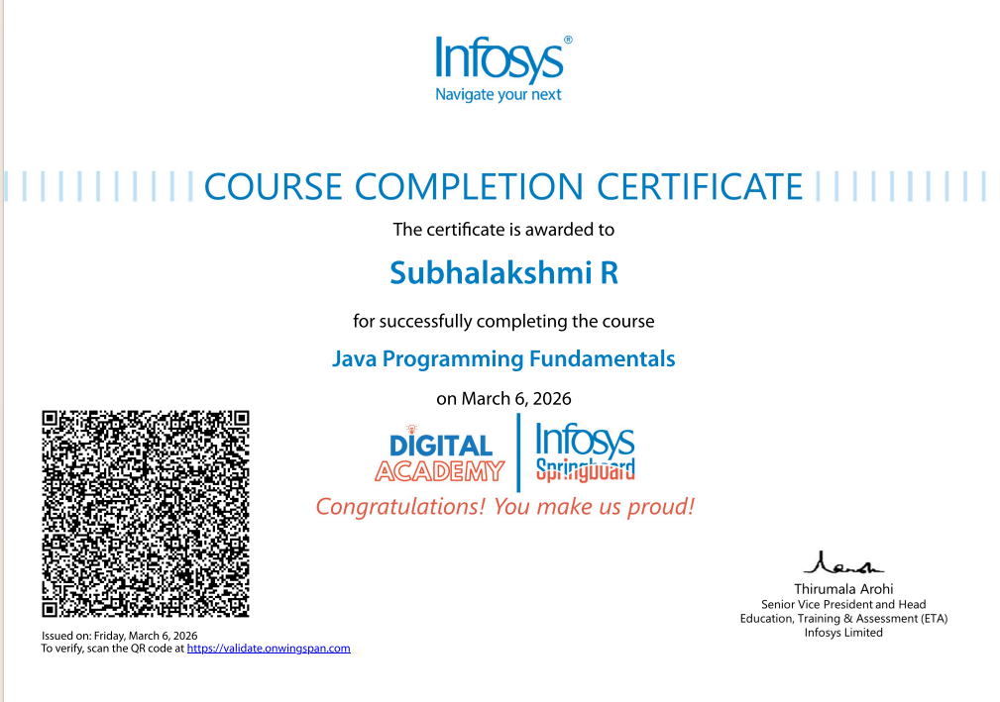
Successfully completed the Java Programming Fundamentals course offered by Infosys Springboard. Gained a strong foundation in Java programming concepts including variables, data types, operators, control structures, loops, arrays, methods, and object-oriented programming principles.
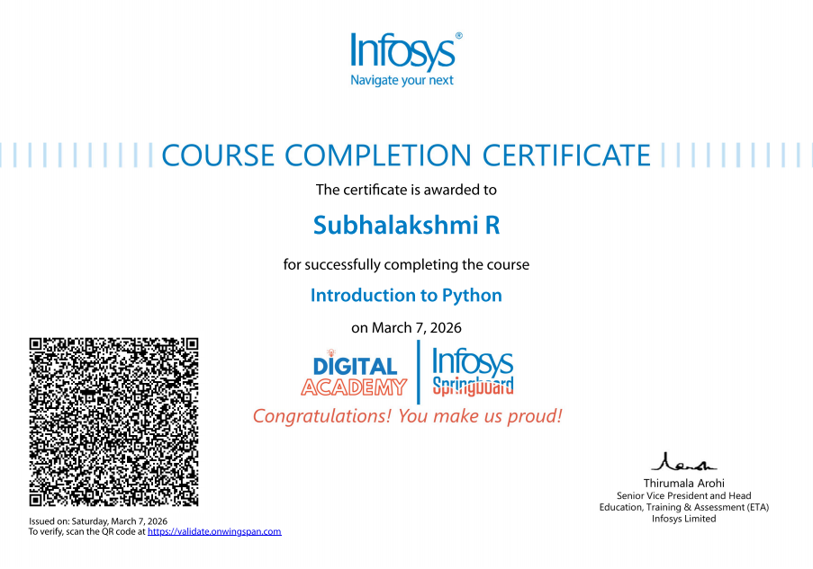
Successfully completed the Introduction to Python course offered by Infosys Springboard. Acquired knowledge of Python fundamentals including variables, data types, operators, conditional statements, loops, functions, data structures, and problem-solving techniques for software development.
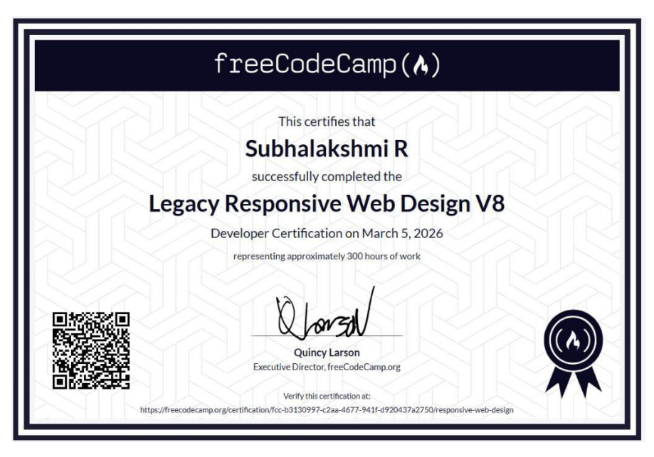
Successfully completed the Legacy Responsive Web Design V8 developer certification offered by freeCodeCamp on March 5, 2026. Dedicated approximately 300 hours of coursework to build a strong foundation in modern web development, mastering HTML, CSS, responsive design layouts, and media queries.
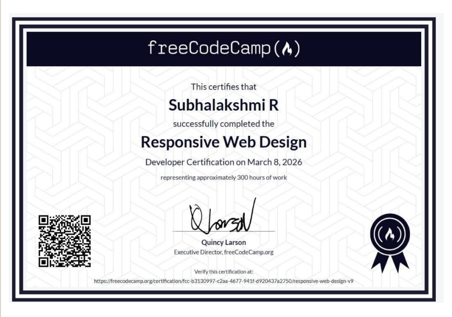
Successfully completed the Responsive We Design developer certification offered by freeCodeCamp on March 8, 2026. Dedicated approximately 300 hours of coursework to mastering modern frontend technologies, focusing on mobile-first design strategies, advanced CSS techniques (Flexbox and Grid), accessibility standards, and building fluid layouts.
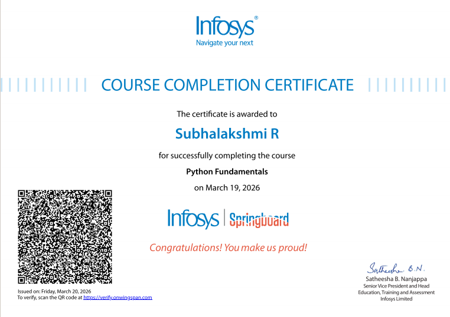
Successfully completed the Python Fundamentals course offered by Infosys Springboard on March 19, 2026. Gained a solid understanding of core Python programming building blocks, including variables, syntax rules, control flow mechanisms, data structures, and foundational problem-solving techniques using Python.
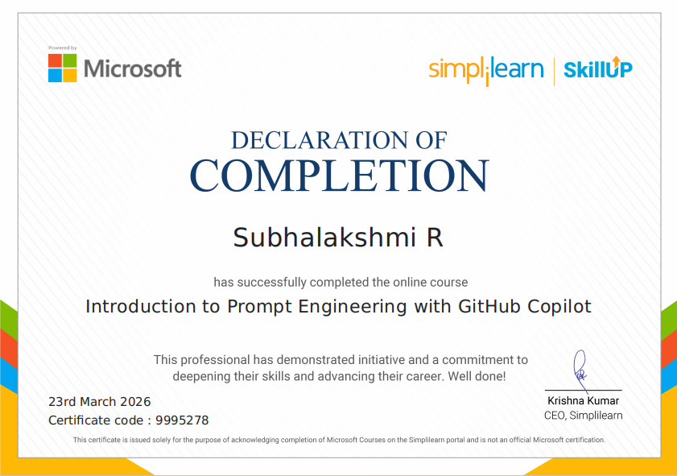
Successfully completed the online course Introduction to Prompt Engineering with GitHub Copilot offered by Simplilearn SkillUp in partnership with Microsoft on March 23, 2026. Developed core skills in crafting effective prompts, leveraging AI-powered code completion tools, and understanding principles to accelerate coding workflows and enhance developer productivity.
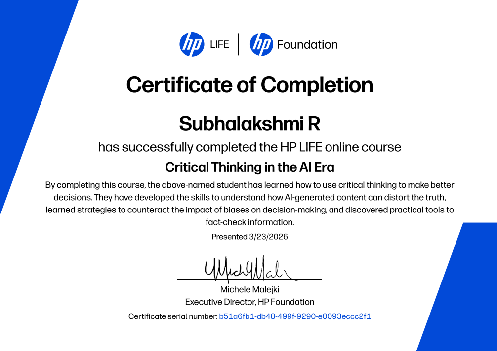
Successfully completed the HP LIFE online course Critical Thinking in the AI Era offered by the HP Foundation on March 23, 2026. Developed critical skills to evaluate AI-generated content, identify biases impacting decision-making processes, and utilize practical toolsets to fact-check information objectively.
Successfully passed all requirements for the Microsoft Applied Skills credential on November 10, 2025. Demonstrated verifiable proficiency in implementing security configurations for cloud storage environments, focusing on securing data access, configuring network isolation, and managing encryption keys for Azure Files and Azure Blob Storage.
Successfully passed all requirements for the Microsoft Applied Skills credential on November 4, 2025. Demonstrated verifiable proficiency in low-code application development, including designing custom user interfaces, connecting data sources, implementing logic formulas, and managing deployment for custom canvas applications within the Power Apps ecosystem.
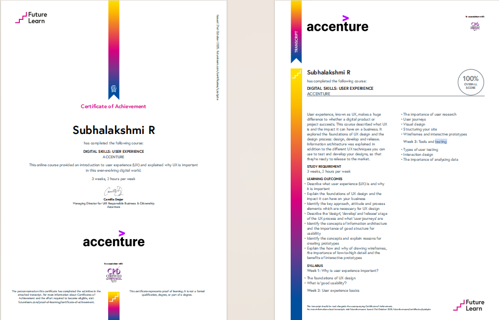
Successfully completed the Digital Skills: User Experience online course offered by Accenture on FutureLearn on October 21, 2025. Gained foundational knowledge in UX design principles, user research techniques, user journeys, information architecture, wireframing, and interactive prototyping over a 3-week study period.
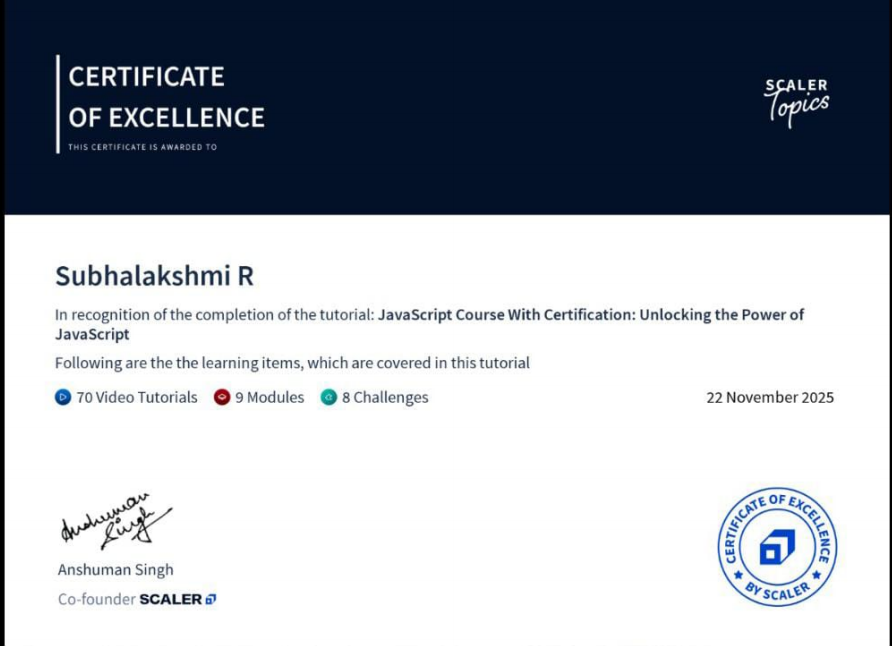
Successfully completed the comprehensive JavaScript tutorial offered by Scaler Topics on November 22, 2025. Covered 9 complete learning modules featuring 70 video tutorials and successfully cleared 8 interactive coding challenges to build a deep structural understanding of JavaScript core concepts, syntax, and programming fundamentals.
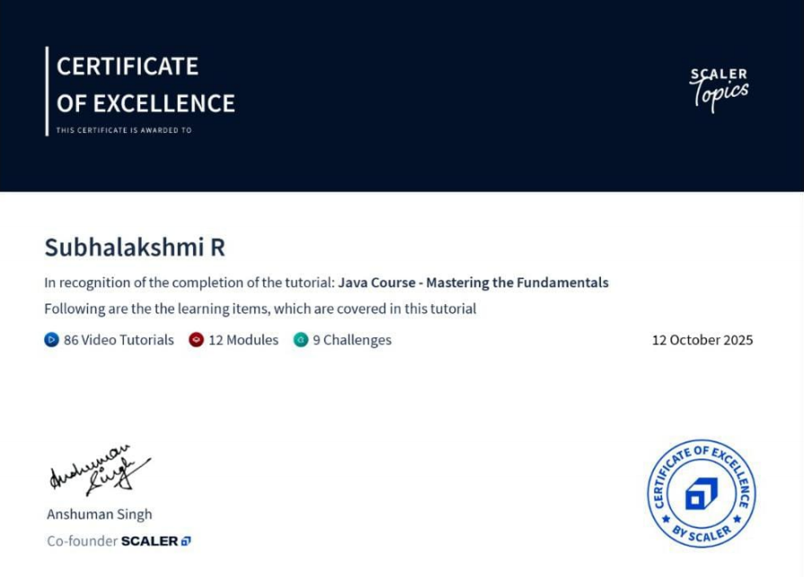
Successfully completed the foundational Java tutorial offered by Scaler Topics on October 12, 2025. Completed 12 intensive modules consisting of 86 video tutorials and resolved 9 comprehensive coding challenges, building strong competency in core Java programming concepts and structural problem-solving.
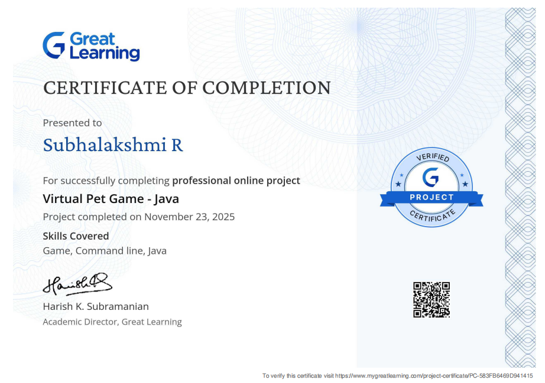
Successfully completed the professional online project Virtual Pet Game - Java offered by Great Learning on November 23, 2025. Applied core Java programming concepts to design and build a command-line interactive game, gaining hands-on development experience in application logic, object-oriented structure, and user input handling.
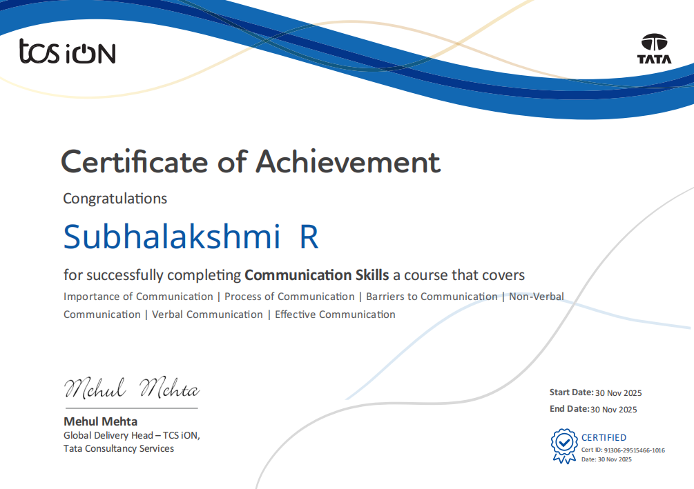
Successfully completed the Communication Skills course offered by TCS iON on November 30, 2025. Gained fundamental professional insights into the importance and process of communication, strategies to overcome barriers, non-verbal and verbal communication elements, and frameworks for ensuring effective communication in workplace environments.